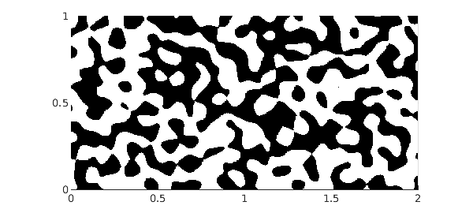

Recently Chebfun added the command randnfun for generating smooth random functions in 1D. In keeping with Chebfun's mission of realizing continuous analogues of the familiar discrete objects, randnfun can be regarded as a continuous analogue of the Matlab command randn. Chebfun can construct 2D random functions too, with randnfun2 (and on the sphere with randnfunsphere). For details, see [1]. Random functions in 3D have not yet been implemented.
In a word, the idea is that a "smooth random function" is constructed from a finite Fourier series with independent normally distributed random coefficients. A parameter $\lambda$ must be specified that sets the associated space scale. Approximately speaking, a random function contains wave numbers up to about $2\pi/\lambda$.
To illustrate, here is a random function with $\lambda = 0.2$ on a $2\times 1$ rectangle. Negative values are black and positive values are white.
lambda = 0.2; rng(0), f = randnfun2(lambda, [0 2 0 1]); plot(f), view(0,90), colormap(gray(2)) caxis(norm(caxis,inf)*[-1 1]) axis equal, axis([0 2 0 1]) XT = 'xtick'; YT = 'ytick'; set(gca,XT,0:.5:2,YT,0:.5:1)
A contour plot shows more:
contour(f), colormap('default')
axis equal, axis([0 2 0 1])
set(gca,XT,0:.5:2,YT,0:.5:1)

To isolate the zero contours to high accuracy (though it takes longer), one could use roots.
c = roots(f); plot(c) axis equal, axis([0 2 0 1]) set(gca,XT,0:.5:2,YT,0:.5:1)
Here's a 3D plot.
plot(f) view(-20,50), camlight left
Here for comparison is a periodic random function.
f = randnfun2(lambda, [0 2 0 1], 'trig'); plot(f), view(0,90), colormap(gray(2)) caxis(norm(caxis,inf)*[-1 1]) axis equal, axis([0 2 0 1]) set(gca,XT,0:.5:2,YT,0:.5:1)

And here are random functions with $\lambda = 0.1$
lambda = 0.1; f = randnfun2(lambda, [0 2 0 1]); plot(f), view(0,90), colormap(gray(2)) caxis(norm(caxis,inf)*[-1 1]) axis equal, axis([0 2 0 1]) set(gca,XT,0:.5:2,YT,0:.5:1)

and with $\lambda = 0.05$
lambda = 0.05; f = randnfun2(lambda, [0 2 0 1]); plot(f), view(0,90), colormap(gray(2)) caxis(norm(caxis,inf)*[-1 1]) axis equal, axis([0 2 0 1]) set(gca,XT,0:.5:2,YT,0:.5:1)

[1] S. Filip, A. Javeed, and L. N. Trefethen, Smooth random functions, random ODEs, and Gaussian processes, SIAM Review, 61 (2019), 185-205.